1
Entdeckung
Kontext und ZielVerständnis des Problems, der zu verbessernden Entscheidung, der beteiligten Nutzer und des erwarteten Ergebnisses.
Power BIQlik CloudLooker StudioSQL Server
Data & Analytics
Patrones Lab ist ein Labor für Datenanalyse zu alltäglichen und realen Phänomenen.
Hier entstehen unabhängige Projekte auf Basis öffentlicher Daten. Im Mittelpunkt stehen das Erkennen von Mustern, das Beschreiben von Verhaltensweisen und die Vermittlung der Ergebnisse in ihrem Kontext.
Ziel ist es, Fragen zu formulieren, Daten aufzubereiten, klare Analysen zu erstellen und Ergebnisse zu visualisieren.
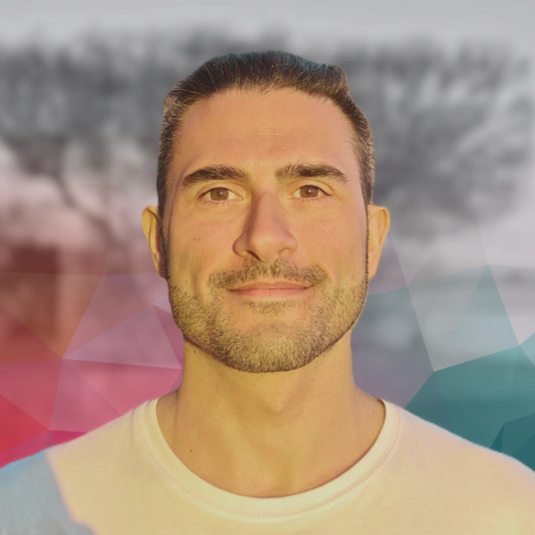
Ich bin Malcolm Di Pietro Cagliari, Aktuar und Spezialist für Data & Analytics. Mein beruflicher Werdegang verbindet Business Intelligence, Unternehmensreporting, Datenmodellierung und prädiktive Analytik, mit Erfahrung im Bankwesen, in der Versicherungsbranche und im Luftverkehr.
Ich bin darauf spezialisiert, geschäftliche Anforderungen mit datenbasierten Lösungen zu verbinden: KPIs zu definieren, Informationen zu strukturieren, Dashboards aufzubauen und Modelle zu entwickeln, die helfen, das Geschehen besser zu verstehen und Entscheidungen mit mehr Kontext zu treffen.
Eine Auswahl angewandter Projekte mit öffentlichen Daten, dokumentierter Methodik und visuellen Ergebnissen. Mit den Filtern lässt sich nach Disziplin, Tool oder Ergebnistyp navigieren.
Analyse des Flugverkehrs in Spanien mit öffentlichen AENA-Daten, mit Fokus auf Volumen, Muster nach Flughafen und Unterschiede zwischen Verkehrskategorien.
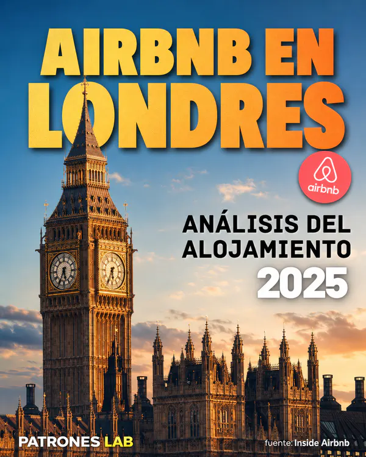
Explorative Airbnb-Analyse in London zum Vergleich von Preisen, Unterkunftsarten, Verfügbarkeit, Mindestaufenthalten und Unterschieden zwischen Stadtteilen.
Analyse gemeldeter Taxifahrten in Chicago zur Untersuchung von Dauer, Nachfrage, räumlicher Verteilung und operativen Mustern.
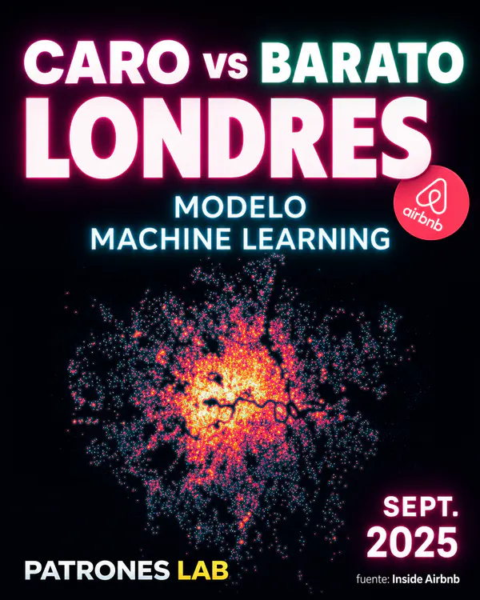
Überwachte Klassifikation von Angeboten als relativ teuer oder günstig innerhalb der jeweiligen Unterkunftsart.
Interaktives Looker-Studio-Dashboard zur Analyse von Taxifahrten in Chicago, operativen Kennzahlen, Stundenmustern und Start-Ziel-Routen.
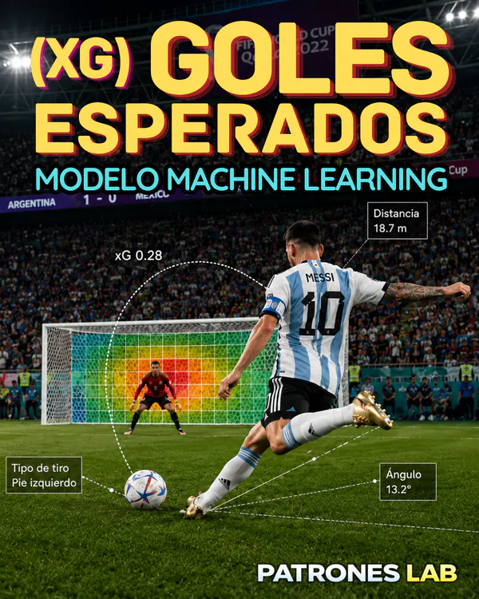
Logistisches Regressionsmodell, das mit öffentlichen StatsBomb-Daten die Torwahrscheinlichkeit jedes Schusses schätzt, auf Spielebene validiert und auf die WM 2022 in Katar angewendet wird.
Projekt öffnen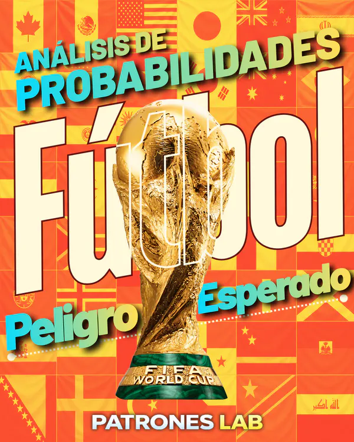
Probabilistisches Modell der erwarteten Gefahr im Fußball mit öffentlichen StatsBomb-Daten. Es schätzt die Torwahrscheinlichkeit innerhalb der nächsten fünf Aktionen.
✅ veröffentlicht
Unüberwachtes K-means-Clustering zur Erkennung von Kreditkartenbetrug.
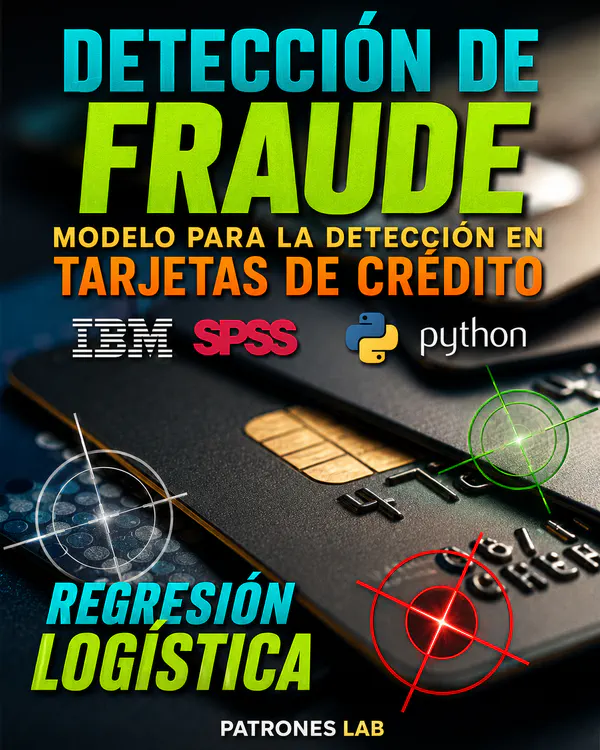
✅ veröffentlicht
Überwachtes logistisches Regressionsmodell zur Erkennung von Kreditkartenbetrug.
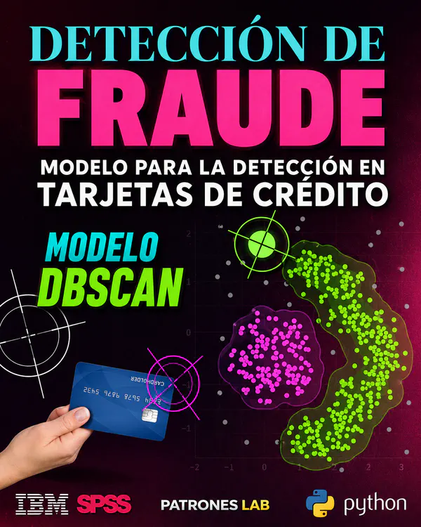
✅ veröffentlicht
Unüberwachtes DBSCAN-Clustering zur Erkennung potenzieller Muster von Kreditkartenbetrug.
Projekt öffnenAnalyse der WM-Statistik 2022 mit öffentlichen StatsBomb-Daten, um individuelle Leistungen zusammenzufassen und Spieler mithilfe von Perzentil-Radarcharts zu vergleichen.
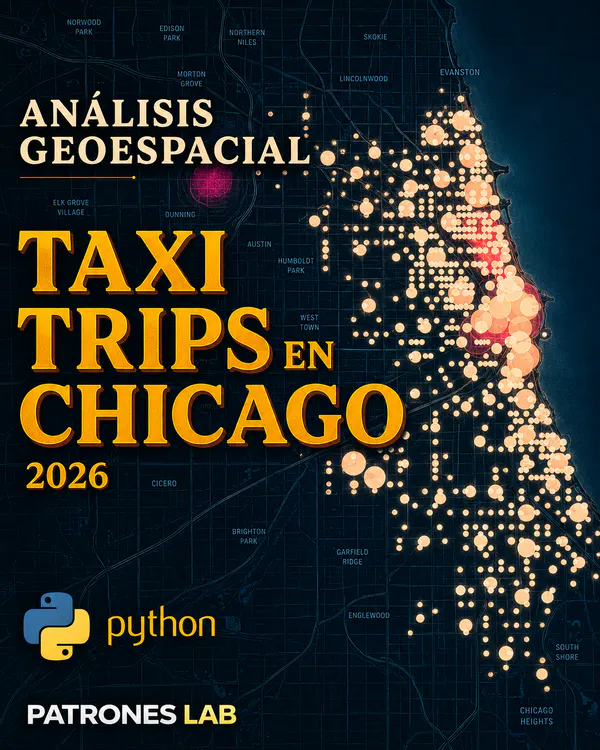
Georäumliche Analyse von Taxifahrten in Chicago mit Fokus auf Aktivitätsschwerpunkte, urbane Routen und die räumliche Konzentration der Nachfrage.
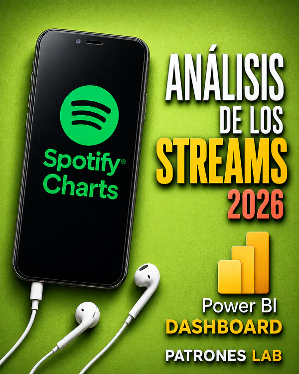
Interaktives Power-BI-Dashboard zu Spotify Charts zur Analyse von Streams, Rankings, zeitlichen Trends und der geografischen Verteilung von Musik.
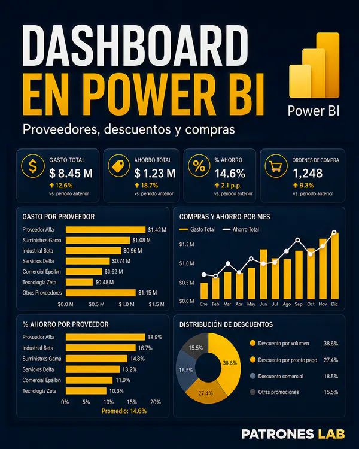
✅ veröffentlicht
Interaktiver Power-BI-Bericht zur Analyse von Lieferantenausgaben, monatlichen Trends, Kategorienverteilung, Einsparungen und geografischer Verteilung.
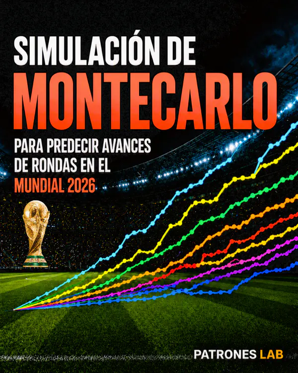
Simulation von einer Million Szenarien der WM 2026 auf Basis von Elo-Ratings, um die Wahrscheinlichkeiten für Halbfinale, Finale und Titelgewinn zu schätzen.
Klassifikationsmodell zur Schätzung wirtschaftlicher Schäden durch Wetterereignisse, mit Vergleich zwischen logistischer Regression und neuronalem Netz.
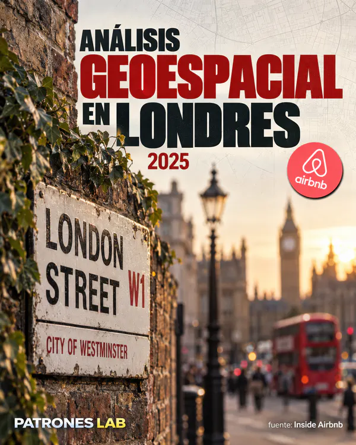
Georäumliche Analyse von Airbnb-Preisen in London anhand der Entfernung zum Stadtzentrum, Stadtteilen und geografischen Nachbarschaftsmetriken.

Simulation von einer Million Szenarien der LaLiga 2026/27 auf Basis von Elo-Ratings, um die Wahrscheinlichkeiten der wichtigsten Saisonergebnisse zu schätzen.

Tormodell auf Basis der Poisson-Verteilung zur Berechnung der Angriffs- und Abwehrstärke jedes Teams, kombiniert mit einer Monte-Carlo-Simulation zur Schätzung der Wahrscheinlichkeiten für den Wettbewerb.

Simulation von einer Million Szenarien der Nations League 2026/27 mit Elo-Ratings und einem Poisson-Tormodell zur Schätzung der Wahrscheinlichkeiten für den Gruppensieg, das Weiterkommen in der K.-o.-Phase und den Titelgewinn.
Für berufliche Möglichkeiten, Analytics-Kooperationen oder Projekte in BI, Machine Learning und Dashboards.
E-Mail: encontrandopatrones@gmail.com
Schreiben Sie mir eine Nachricht; ich melde mich zeitnah zurück.